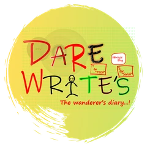
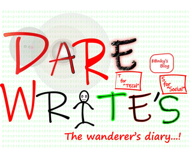
Dare Write’s Brand KitSanket Tambare · v1.0My writing brand, kept in one place: three looks, the original logo and signature, the sizes and rules, and 29 prompt templates that turn a post, a run or a project into a prompt I can paste into an AI tool. This deck covers why the kit exists, a tour of the site, and how a prompt is put together.
A quote card, a run poster or a project launch meant explaining the brand again: the colours, the fonts, the 4:5 grid, which corner the logo goes in. Then the image model redrew the logo, misspelt a word, and turned Marathi into shapes that only looked like Devanagari.
The templates already existed, inside a design mock-up exported from a visual design tool: 29 templates, 91 tool variants, three directions. Useful, but a mock-up. The job was to turn it into a site I’d actually open before posting.
Every graphic is three layers, always in this order, and an AI tool only ever touches the first.
A switch at the top of every page re-themes the whole site at once: colours, fonts, logo and the signature’s filter. Each direction says what it is for.
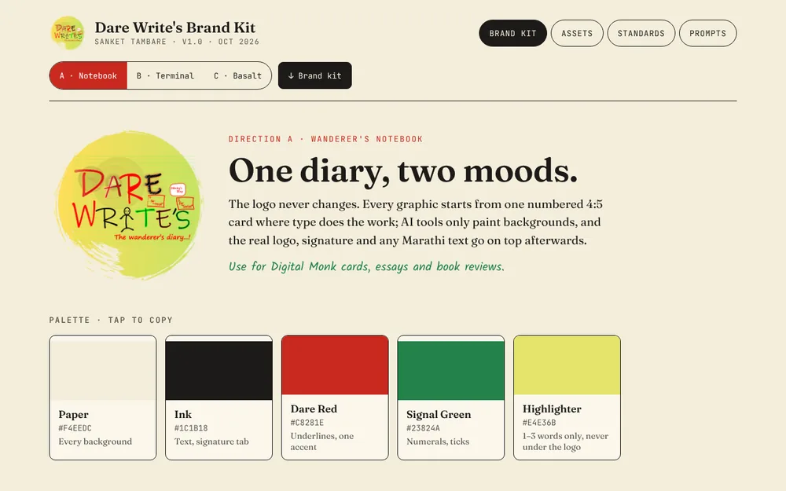
Digital Monk cards, essays, book reviews.
Fraunces · Kalam · JetBrains Mono
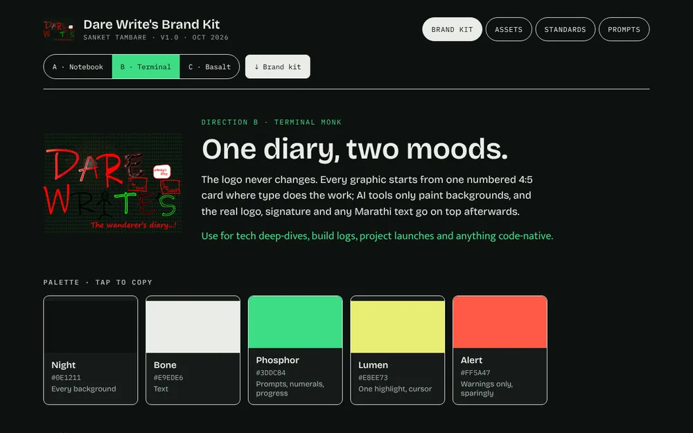
Tech deep-dives, build logs, project launches.
Bricolage Grotesque · Mukta · IBM Plex Mono
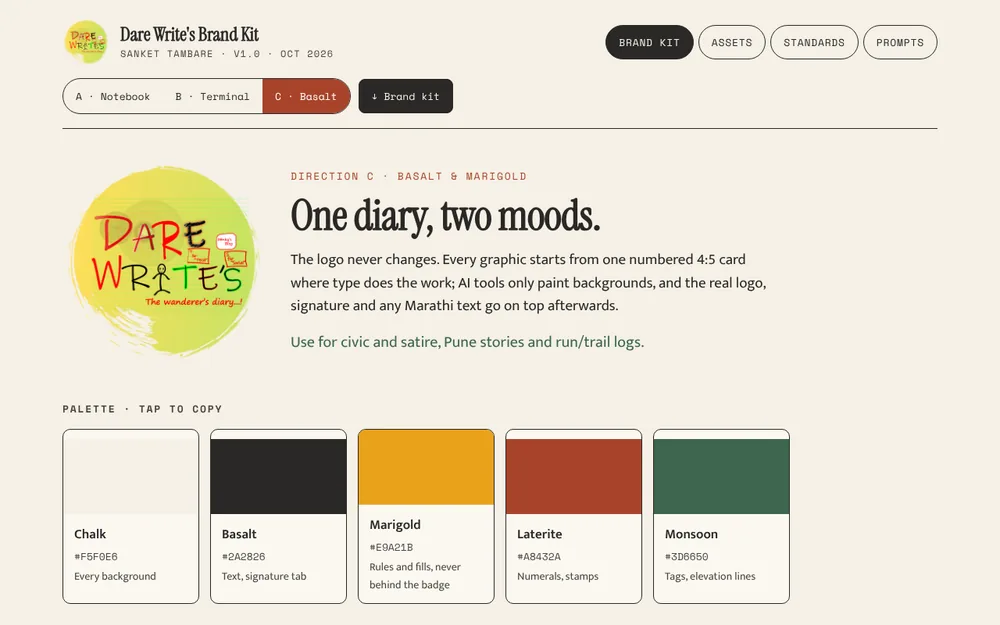
Civic and satire, Pune stories, run and trail logs.
Instrument Serif · Mukta · Space Mono
The switch sets one attribute, data-dir, on <html>. Every key in themes.yaml becomes a CSS variable, so a fourth direction would theme the whole site with no CSS change. A tiny script in <head> applies the saved choice before first paint, so pages never flash the wrong theme.
The home page ends in a live Digital Monk card: the 1080×1350 master format at a third of its size, filled from a four-field form.
17.10.2026 · 05:42 IST · Pune for A, 17·10·2026 / 05:42 IST / Pune for B and C.Above it: five swatches that copy their hex on tap, three type specimens, and the voice — what the brand sounds like, and the four things it never does.
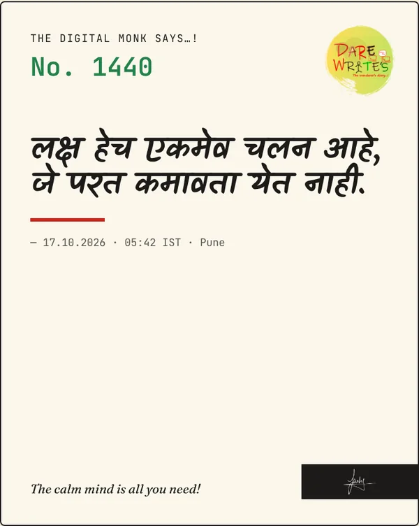
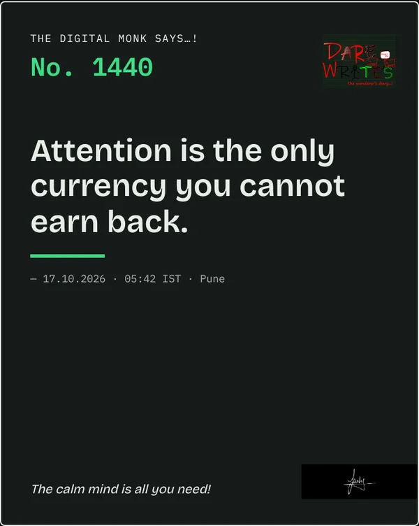
Each template has its own page and URL, a size and format line, a “why this works” note, and a tab for every tool it supports.
The tool lives in the URL — /prompts/run?tool=claude — so a link opens on the right tab.
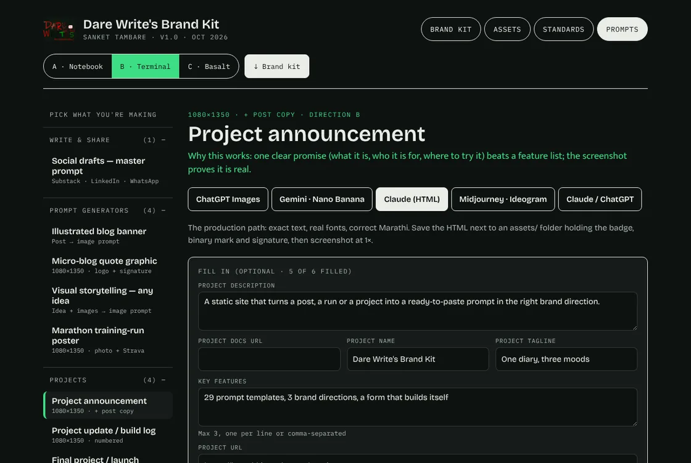
## claude, ## gemini… into tool variants (at build time).{CLAUDE_KIT}, {DIRECTION_BLOCK}, {LOGO_SAFE}.{A: … | B: … | C: …} for the active direction.proj- templates.{DIRECTION} into A, B or C.{KEY} still in the text, in order.// quote · tool claude · direction B "No. {NUMBER}" (mono 60px; {A: green | B: phosphor | C: laterite}) // becomes "No. 1440" (mono 60px; phosphor)
It is all in prompt.ts: 83 lines of pure functions with no DOM or Astro in them, so the same code runs at build time, in the browser on every keystroke, and under node --test.
{KEY} left after step 7 becomes a field. A new placeholder in any Markdown file gets a field on the next build, with no code change.fields.yaml only refines it: a label, a type (text, textarea, url, number, select), a hint, a default.PROJECT_NAME once and every project prompt already has it; they live in this browser’s localStorage under dw-brand-kit.Typing re-runs the eight steps for the output only. The form is rebuilt only when the direction or tool changes, so the cursor never jumps.
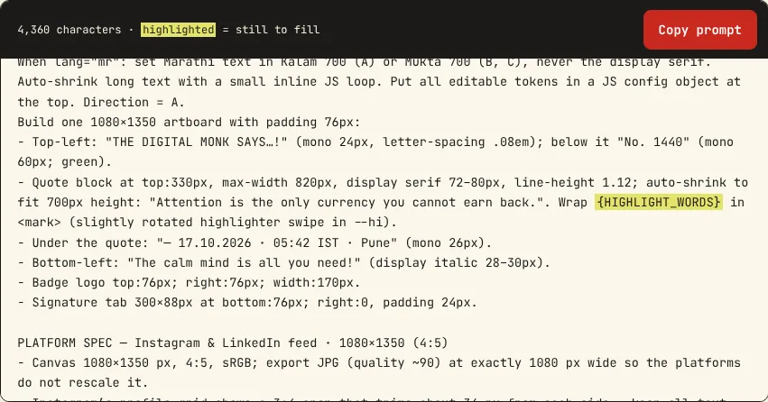
Every template ends in a checklist: its own platform checks, then eight that apply to everything — proofread letter by letter, look for gibberish text in the background, test it on a phone, contrast of at least 4.5:1, original logo files, brand colours only, the right export size with alt text, and what to do when something fails.
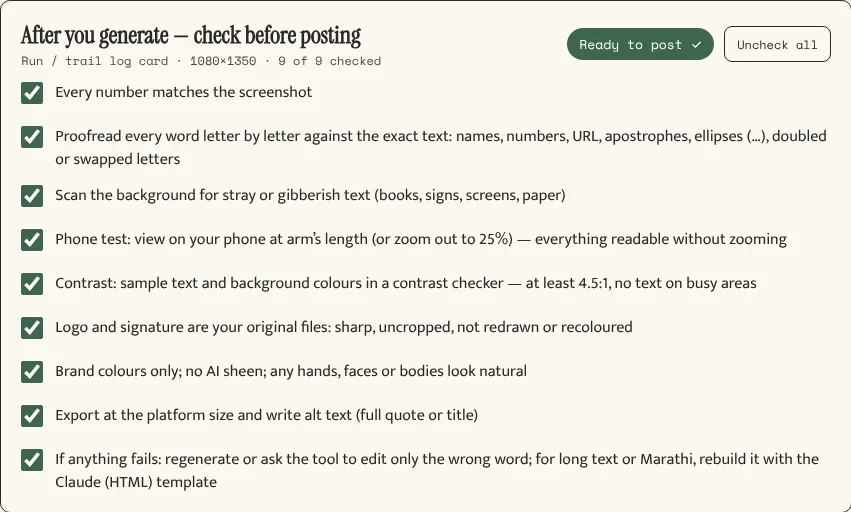
A deliberate change from the mock-up. The design started with every box ticked, so “Ready to post ✓” showed before anything had been checked. On the site they start empty.
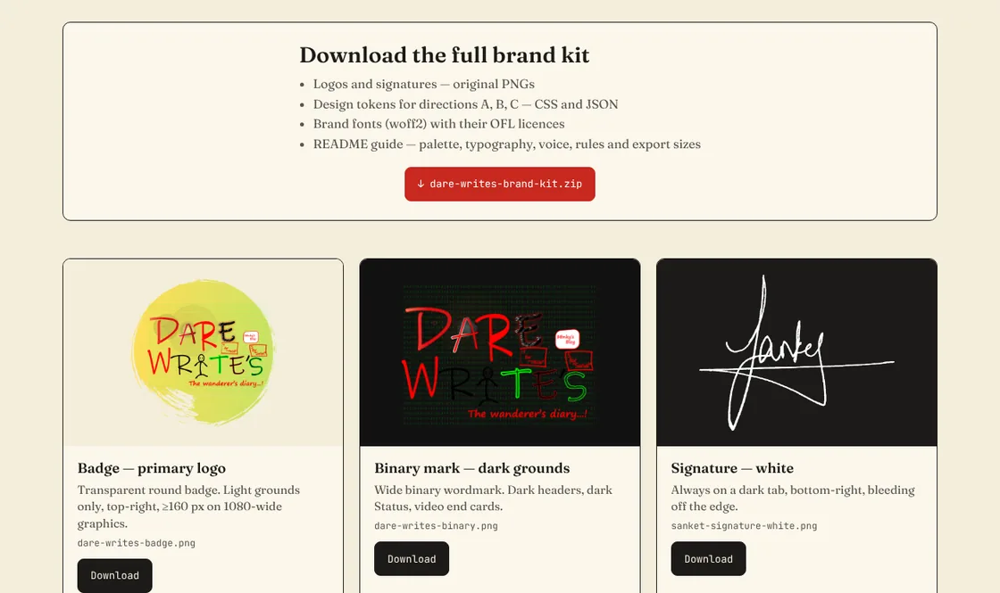
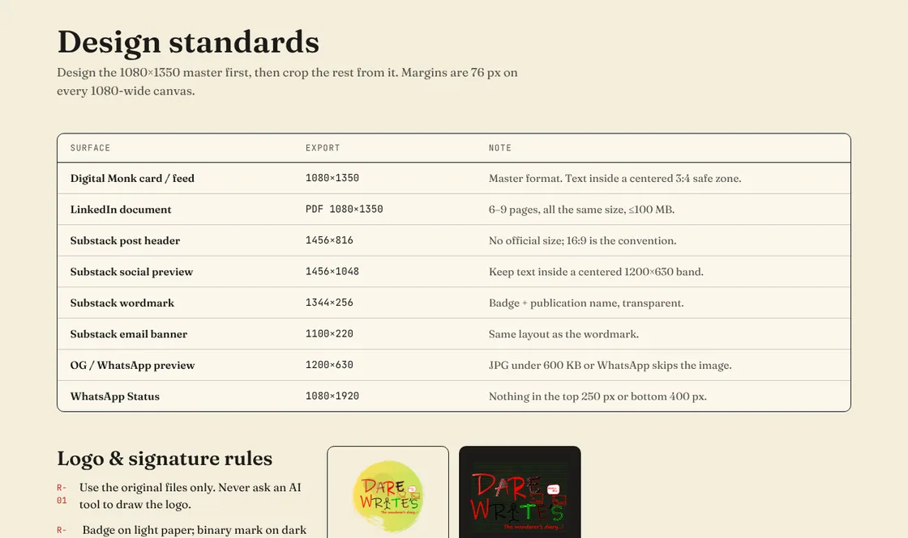
dare-writes-brand-kit.zip is built once, at build time, by an Astro endpoint using fflate: 67 files, 2.7 MB. Cloudflare serves it as a plain static file.
site.yaml and themes.yaml, so it can’t drift from the website.dare-writes-brand-kit/ ├── README.md generated ├── assets/ badge · binary · 2 signatures ├── tokens/ A · B · C as .css and .json └── fonts/ 8 families + OFL licences
X-Robots-Tag header. No robots.txt disallow, which would stop crawlers from ever seeing the noindex.Parity, before anything shipped. The 29 templates and every shared block were converted from the mock-up’s own data by a one-off script, not copied by hand. Then all 273 combinations — 91 tool variants × 3 directions — were generated by the old code and the new engine, and compared.
site.yaml.fonts.css and site.yaml: a new family goes in both.proj-.